Utilizator GitHub: Sopu Liviu
Repository: https://github.com/Alaharbro/Evaluare_Nr2
Am creat repository-ul Evaluare_Nr2 pe GitHub și am inițializat proiectul local.
$ mkdir Evaluare_Nr2
$ cd Evaluare_Nr2
$ git init
Am adăugat fișierul index.ev.2..html în repository.
$ touch index.ev.2..html
$ git add index.ev.2..html
$ git commit -m "Initial commit: Add index.ev.2..html"
Am conectat repository-ul local la GitHub și am transferat modificările.
$ git remote add origin https://github.com/Alaharbro/Evaluare_Nr2.git
$ git push -u origin master
Am clonat repository-ul și am adăugat fișierul settings.xml.
$ git clone https://github.com/Alaharbro/Evaluare_Nr2.git
$ touch settings.xml
$ git add settings.xml
$ git commit -m "Commit file settings.xml"
Am redenumit fișierul în configuration.xml și am făcut commit.
$ git mv settings.xml configuration.xml
$ git commit -m "Commit configuration.xml"
Am modificat comentariul ultimului commit.
$ git commit --amend -m "Commit file configuration.xml"
Am transferat toate modificările în repository-ul remote.
$ git push
Am adăugat fișierul page1.html în repository-ul remote și am actualizat repository-ul local.
$ git pull origin master
Am revenit la commit-ul „Commit file configuration.xml”.
$ git reset --hard [hash]
Am sincronizat modificările cu repository-ul remote.
$ git push --force-with-lease
Am creat branch-ul stage din master.
$ git checkout -b stage
$ git push -u origin stage
Am creat fișierul hosts.xml și am făcut commit.
$ touch hosts.xml
$ git add hosts.xml
$ git commit -m "Commit file hosts.xml"
Am adăugat modificările din stage în master.
$ git checkout master
$ git merge stage
$ git push origin master
Am creat branch-ul dev din stage.
$ git checkout stage
$ git checkout -b dev
Am creat fișierul env.txt și am făcut commit.
$ touch env.txt
$ git add env.txt
$ git commit -m "Commit file env.txt"
Am adăugat modificările din dev în stage și le-am urcat pe remote.
$ git checkout stage
$ git merge dev
$ git push origin stage
Am redenumit branch-ul dev în develop și am actualizat repository-ul remote.
$ git branch -m dev develop
$ git push origin develop
$ git push origin --delete dev
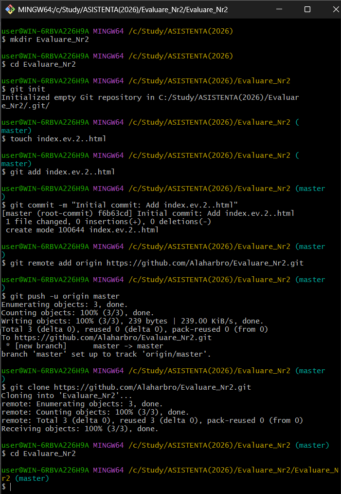
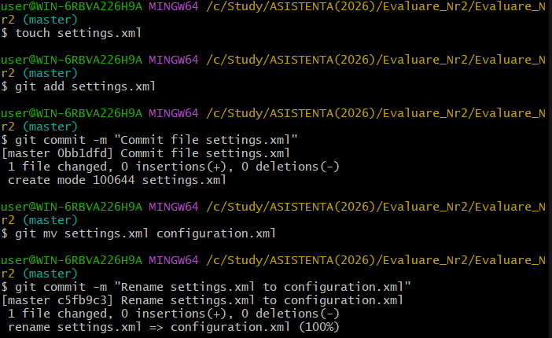
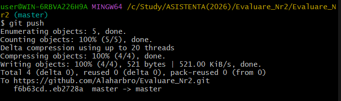
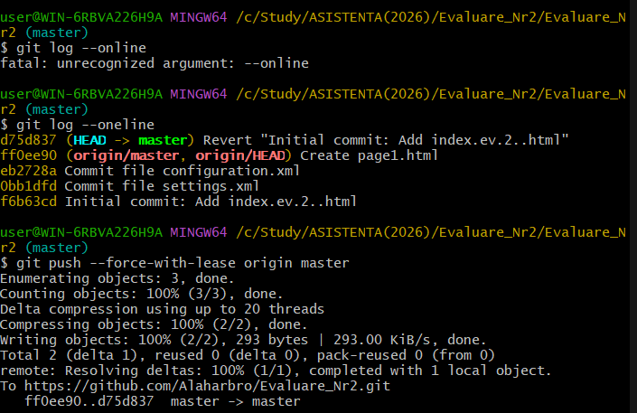
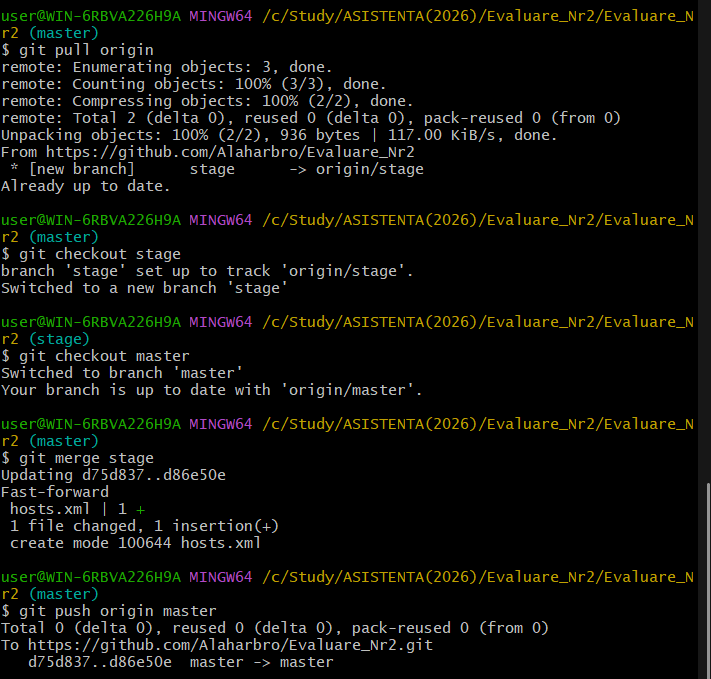
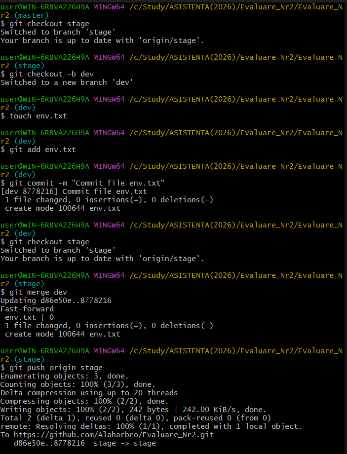
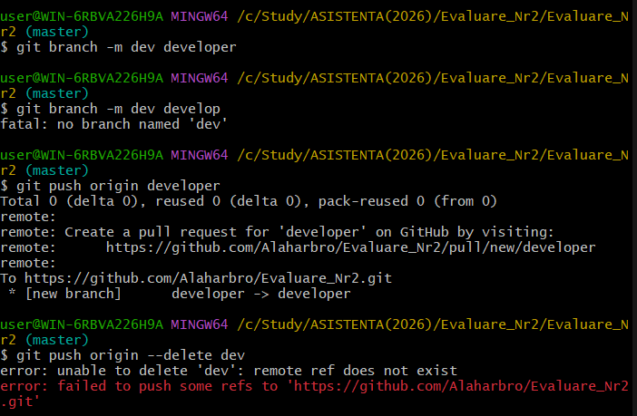
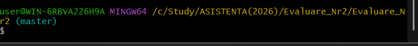
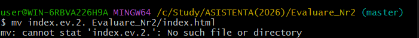
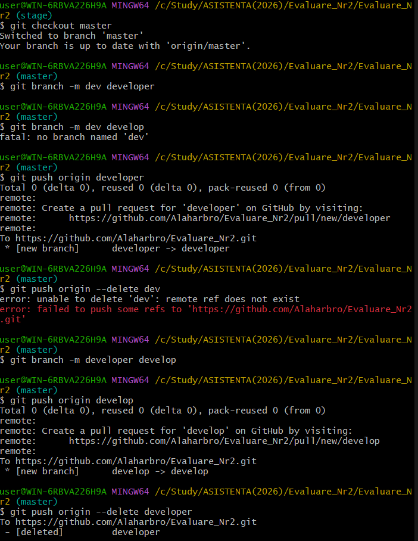
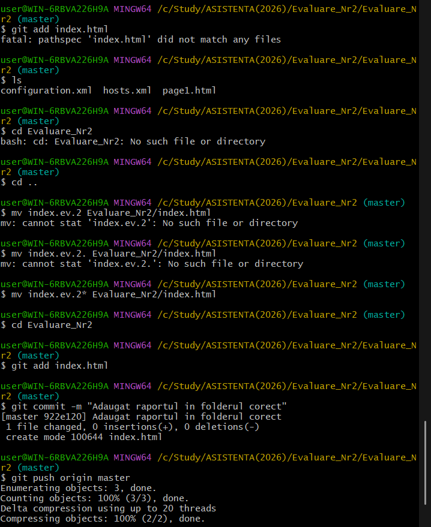
În cadrul acestei lucrări am utilizat Git pentru gestionarea versiunilor, crearea și modificarea commit-urilor, lucrul cu branch-uri și sincronizarea cu repository-ul remote de pe GitHub.